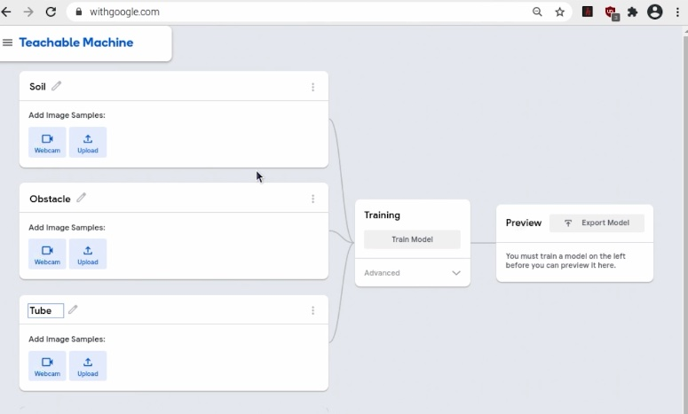
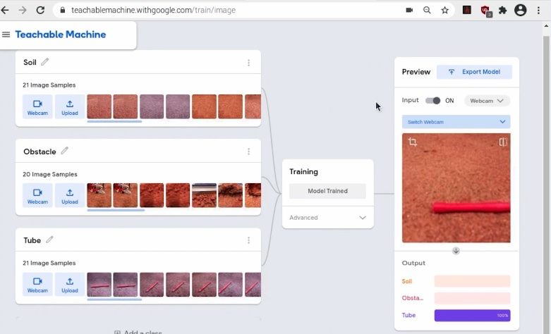
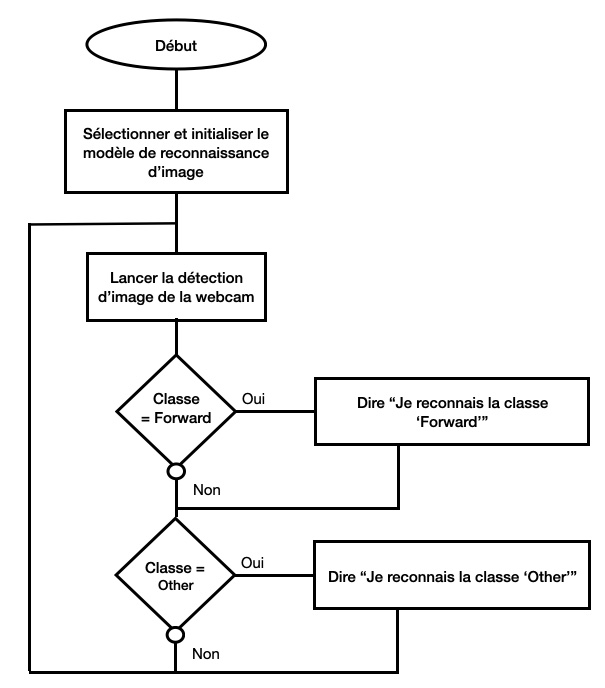
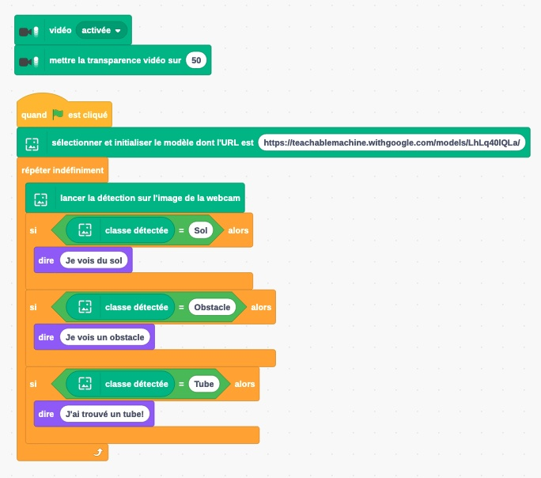
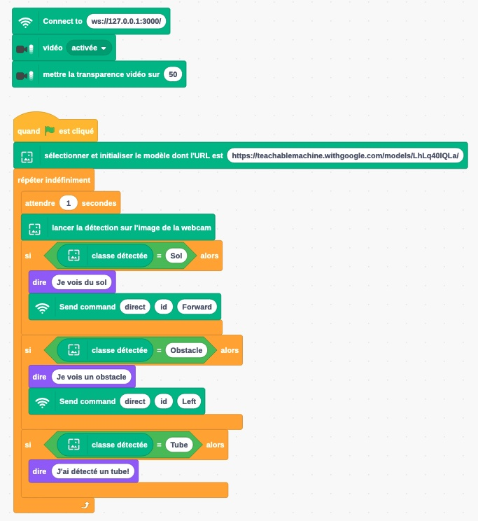

7. Contrôle du FetchBot et reconnaissance d’images avec Scratch¶
Objectif: Faire déplacer le FetchBot avec Scratch en utilisant la reconnaissance d’images.
Âge |
10 à 14 ans |
Notions abordées |
Intelligence artificielle, classification d’images, robotique, programmation avec Scratch, condition, boucle. |
Durée |
4 heures |
Dispositif pédagogiques |
Par groupe de 2 |
Matériel |
Un FetchBot et un laptop/tablette par groupe de 2, avec connexion à Internet |
Prérequis |
1. Reconnaissance d’images avec Scratch (voir Activité 2 - Reconnaissance d’images avec Scratch) |
7.1. Aperçu¶
Dans cette activité, tu vas programmer le FetchBot pour le faire explorer un terrain et retrouver un objet. On utilisera comme exemple ici la recherche d’un tube sur un sol martien, comme ce que devra faire le rover Fetch sur mars. Tu utiliseras la reconnaissance d’images pour contrôler ce que fais le rover: Faire avancer le robot lorsque le terrain est dégagé, le faire tourner lorsqu’il rencontre un obstacle, et le faire s’arrêter lorsqu’il trouve le tube.

L’activité se compose de trois parties principales:
Créer un modèle de reconnaissance d’images capable de détecter 3 types de classes: le sol dégagé, les obstacles, et les tubes
Utiliser le modèle de reconnaissance d’images dans un programme Scratch pour faire dire au sprite de rover la classe détectée (comme dans l’activité 2)
Rajouter à ce programme Scratch l’envoi de commandes au rover en fonction de la classe détectée.
La vidéo de ce lien te donne un aperçu de la réalisation de ces activités.
Note
L’activité peut être adaptée pour la recherche d’autres objets (crayon, pièce de légo, …) et sur d’autres types de terrains, par exemple le sol de ta classe, ou même un terrain en extérieur.
7.2. Préparation¶
Ton rover est construit, et tu y es connecté avec VNC viewer depuis un ordinateur ou une tablette.
Il te faudra ensuite choisir un objet que le rover devra retrouver, et délimiter une zone dans laquelle le rover devra rechercher cet objet. Pour l’objet, tu peux choisir un tube, un crayon, une pièce de légo, ou autre. Pour la zone de recherche, tu peux imprimer un sol martien au format A0 ou sous forme de tapis, ou sinon délimiter une zone avec du ruban adhésif. Tu pourras ajouter dans la zone des obstacles à éviter (cailloux, boites, ou autre).
7.3. Création du modèle de reconnaissance d’images¶
La création du modèle suit le même principe que celui décrit dans l’activité 1 - Reconnaissance d’images avec la Teachable Machine. Il te faudra ici prendre des exemples d’images pour trois classes:
le sol dégagé: classe ‘sol’. Les exemples peuvent inclure ici toute partie de la zone où le robot peut avancer, c’est à dire qui ne contient ni obstacle, ni tube.
les obstacles: classe ‘obstacle’. Les exemples peuvent inclure ici toute partie de la zone où le robot est face à un obstacle, comme un bord, un autre robot, ou des objets à éviter comme des cailloux.
le tube à retrouver: classe ‘tube’. Les exemples peuvent inlcure ici toute partie de la zone où le robot est devant un tube.
Ouvre un projet d’images dans la Teachable Machine, et crée trois catégories ‘Sol’, ‘Obstacle’, et ‘Tube’.
{kind=link}
Pour chaque classe, il est en général suffisant de prendre une vingtaine d’exemples. Essaye de varier au maximum les exemples que tu prends (angle ou distance par rapport à un obstacle ou un tube, luminosité, reflet sur le sol, etc…).
La vidéo ici (partie ‘Training’, de 1’30 à 4’50) te montre comment faire cela en pratique.
Après avoir pris une vingtaine d’exemples pour chaque classe, entraîne le modèle. Tu peux ensuite tester si le modèle reconnaît correctement les trois classes. L’interface devrait de la Teachable Machine devrait ressembler à ceci:
{kind=link}
Ici, un tube est devant la caméra, et le modèle reconnaît correctement (classe ‘Tube’ détectée à 100%).
Note
Il est plus facile d’être deux pour prendre les exemples d’images des trois classes: un pour déplacer le rover dans la zone, et l’autre pour prendre les photos sur la Teachable Machine.
7.4. Faire dire au sprite ce que le modèle reconnaît¶
Tu peux maintenant utiliser le modèle dans Adacraft et faire dire au sprite ce qu’il reconnaît. Le principe est le même que celui décrit dans l’activité 2. Tu as ici trois classes, donc une troisième condition à ajouter dans le logigramme:
{kind=link}
Voici le programme à obtenir:
{kind=link}
Note
Attention: Dans le bloc “Sélectionner et initialiser le modèle dont l’URL est …”, c’est l’URL du modèle que tu as créé qu’il faut mettre!
Le programme se trouve dans le répertoire 3_Rover_Camera_Control/FetchBot_Control_IR_Scratch/Adacraft_Scratch et s’appelle FetchBot_IR_Scratch.sb3.
7.5. Contrôle du rover avec la reconnaissance d’images¶
Il ne te reste plus qu’à programmer comment contrôler rover en fonction de que la caméra détecte. Modifie le programme pour
Faire avancer le rover si la classe détectée est le sol
Faire tourner le rover à gauche si la classe détectée est un obstacle.
Quel est le logigramme de ce programme?
Le contrôle du rover utilise l’extension CloudLink comme vu dans l’activité 5. Voici le programme avec l’ajout des commandes de contrôle:
{kind=link}
Le programme se trouve dans le répertoire 3_Rover_Camera_Control/FetchBot_Control_IR_Scratch/Adacraft_Scratch et s’appelle FetchBot_Control_IR_Scratch.sb3.